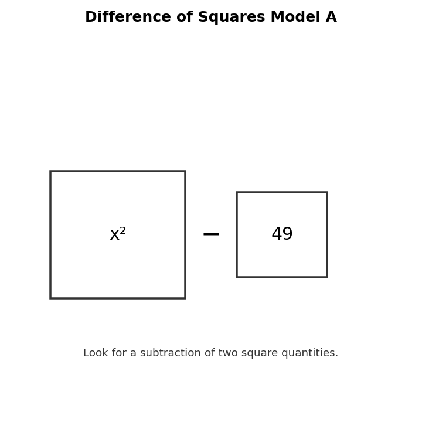

Classify $x^2-64$ as a perfect square trinomial, difference of squares, or neither.
Determine whether $x^2+10x+25$ is a perfect square trinomial.
Factor.
$$x^2-81$$
Factor.
$$x^2-14x+49$$
Use Difference of Squares Model A to write a matching factored form.

Analyze whether $9x^2+24x+16$ is a perfect square trinomial. Justify your answer.
A student says $x^2+36$ factors as $(x+6)(x-6)$. Identify the error.
Create a “near miss” expression that looks like a special pattern but is not. Explain why it fails.